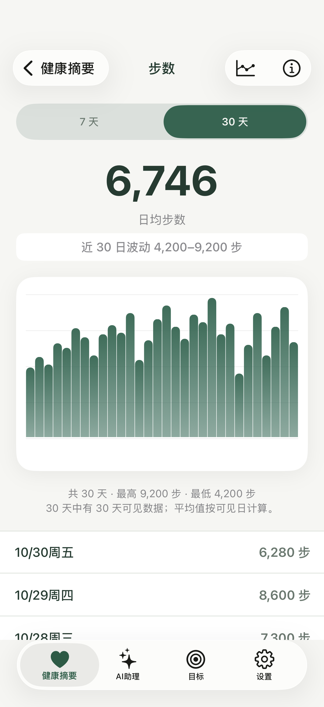
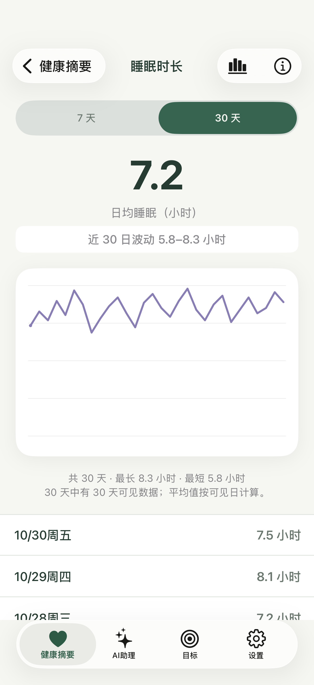
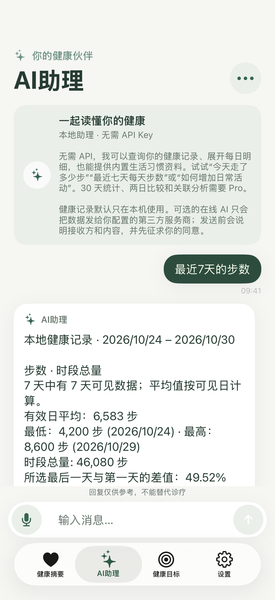
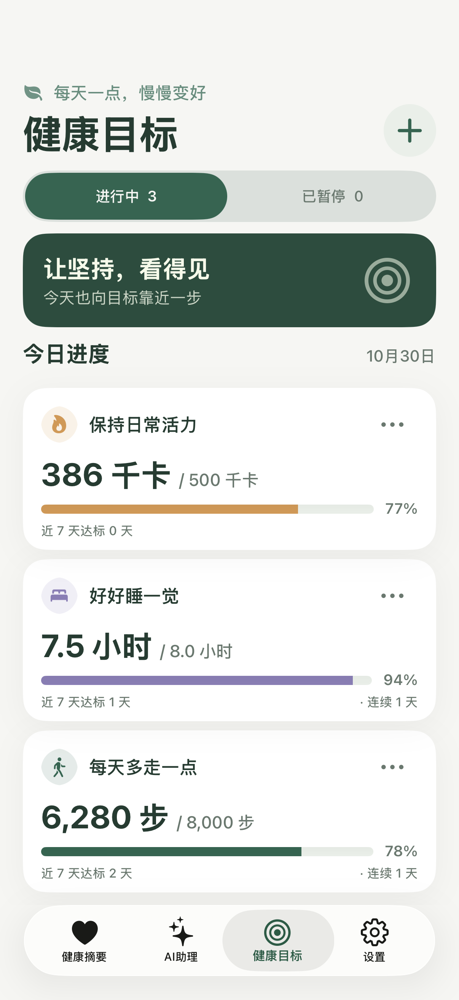
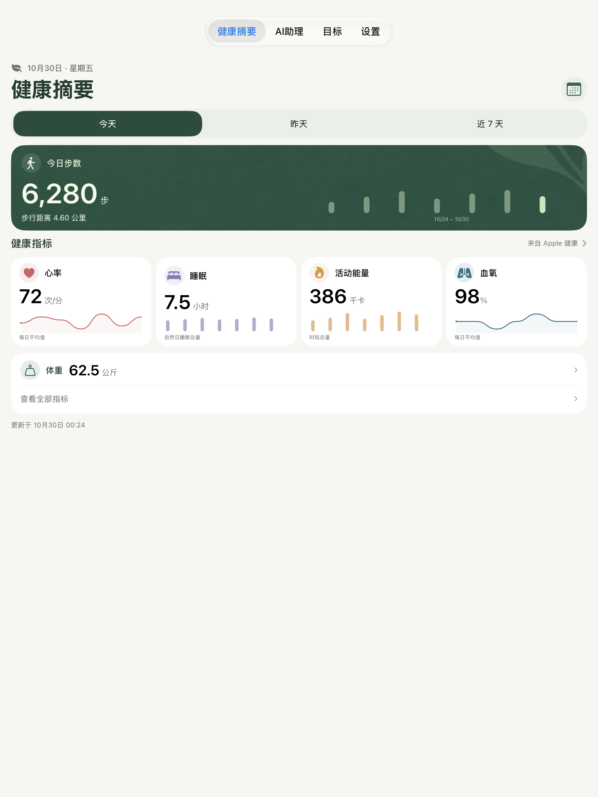
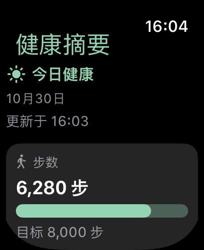

免费开始
无需 API Key，也不用订阅。含摘要、7 天趋势、基础本地问答、内置资料和 1 个目标。
免费下载即可开始。需要更长窗口和更多目标时，再在应用内购买 Pro。1.2.0 已在 App Store 提供。
无需 API Key，也不用订阅。含摘要、7 天趋势、基础本地问答、内置资料和 1 个目标。
¥38 历史中国区参考价
一次性非消耗型内购，商品 ID com.vitagauge.pro.lifetime。历史参考价不代表当前地区可购买，实际可用性、金额与币种以 Apple 购买页为准。买断不含模型额度。
| 功能 | 免费 | Pro 买断 |
|---|---|---|
| 健康摘要与 16 项指标 | 包含 | 包含 |
| 7 天趋势、本地基础查询 | 包含 | 包含 |
| 内置生活习惯资料、使用帮助 | 包含 | 包含 |
| 小组件与配对 Apple Watch 摘要 | 包含 | 包含 |
| 原生 iPad 布局 | 包含 | 包含 |
| 健康目标 | 1 个 | 多个 |
| 30 天趋势与统计 | 不含 | 包含 |
| 两日比较、指标关联 | 不含 | 包含 |
| 自带 API Key 的在线 AI | 不含 | 包含；模型费用另计 |
无自动续订，未开启家庭共享。用原 Apple 账户恢复购买。未购买不影响免费功能。




本地：规则、内置资料和确定性计算。不调用 API，也不下载模型。
API：只显示服务商正文；失败显示错误，不降级成本地答案。
本地 + API：简单查询留在本机，开放解释走在线。在线部分同样需要 Pro、自备 Key 和对接收方的同意。
本地助理支持最近 1 到 30 天及明确日期。更长窗口、两日比较和关联需要 Pro。关联至少需要 7 个已结束的有效配对日，且两组都有变化；这不是因果。缺失不当成零。体温是体温类型，不是睡眠腕温。血压两项不跨时间拼成一次测量。睡眠按自然日分割。AI 回复不能替代诊疗。
1.2.0 现已在 App Store 上架。主应用支持 iPhone（iOS 15+）和原生 iPad 布局；iPad 读取 Apple 健康记录需 iPadOS 17+ 并在该设备上授权。新版改善横屏、窄窗和大字体，提供更多主屏幕小组件尺寸与锁屏行内样式。配对 Apple Watch 应用、表盘复杂功能和智能叠放组件需 watchOS 10+ 及兼容 iPhone。小组件需 iOS / iPadOS 17+。手表显示手机最近同步的五项摘要；它不是实时监测，也不会独立读取 HealthKit 或调用 AI。
下载及内购是否可用，以 Apple 账户所在国家或地区的 App Store 显示为准。
1.2.0 生产界面，合成示例数据；手表显示配对 iPhone 最近同步的摘要。


元气指数用于健康记录整理与日常自我管理，不是医疗器械，不提供诊断、处方或急救监护。统计关联不代表因果。请在作出医疗决定前咨询合格的医疗专业人士。